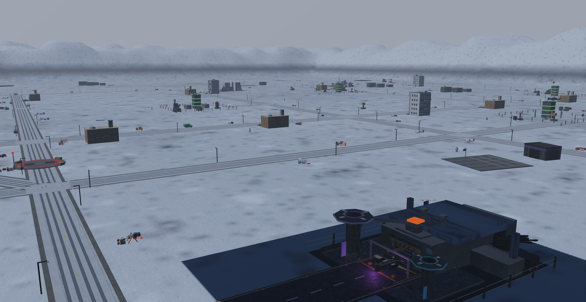
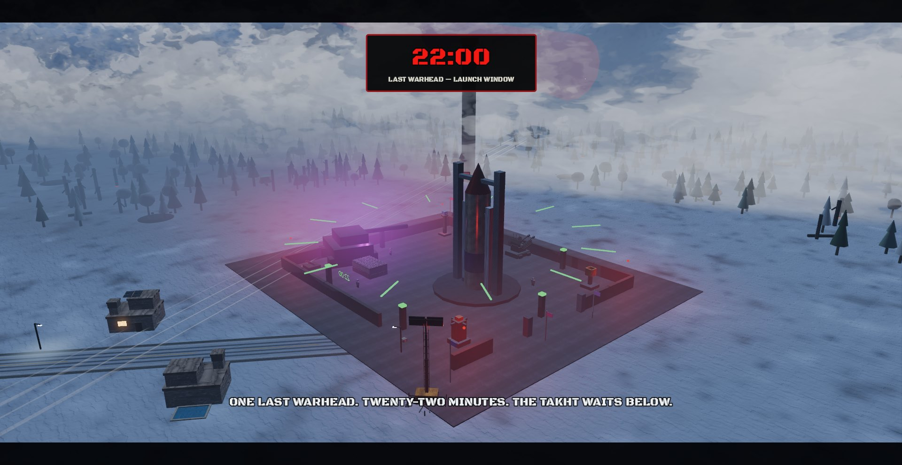
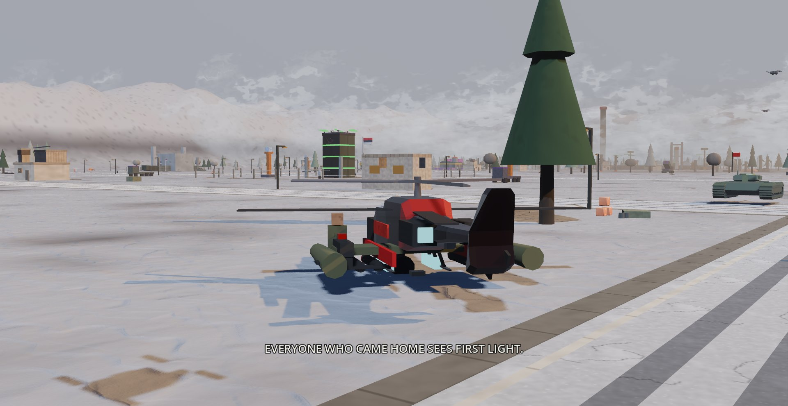
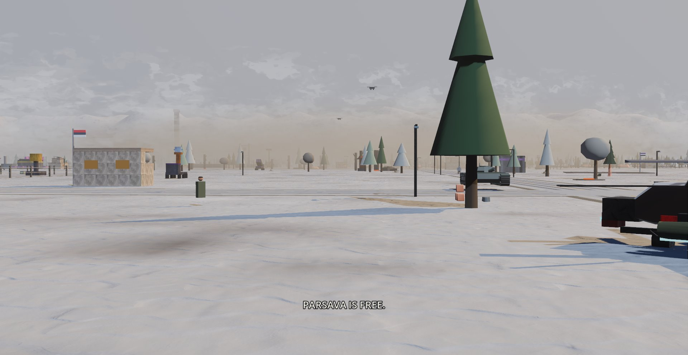

The megabase
Five war factories and six repair-lattice cores feed a machine that rebuilds what you break. Kill the cores and it stops healing.
The last mission order is the squadron's own name.

The actual opening cinematic, captured from the game.
The liberated government, chaired by resistance organizer Laleh Farzan, is now recognized. The Tondbad veterans hold the line, the Tangeh corps brings armor and logistics, the Shahin wing brings counter-machine aircraft, and an international column supports rather than replaces them.
The cask from Tangeh exposed the nuclear program and denied the Marshal most of his stock. One assembled warhead escaped. It sits in a silo under the Daryush Basin.

The prototype recovered in Shahin returns as the Khoshgeleh: double fuel, double gun ammunition, double rockets, the same Hellfire rack, and a belly laser that recharges more than twice as fast as the Shahbaz's.
The generosity is a warning.

After the briefing a nuclear launch timer starts. It drives the physical silo stages, it stops only when the launch is destroyed, and it can fail exactly once, in plain view.
The megabase has eaten the western districts of the national capital. Ruined boulevards, the parliament, the airport, stadium, rail yards and hospital are still readable beneath the machine works.
Five war factories and six repair-lattice cores feed a machine that rebuilds what you break. Kill the cores and it stops healing.

The eastThe whole east is the Azadi zone: the main stronghold, a north camp, and a concrete wall the height of the map, opened at three push roads and covered by four turrets.

The aftermathEstablish the forward bases, break the swarm, kill the cores, stop the launch. At first light, Parsava is free.